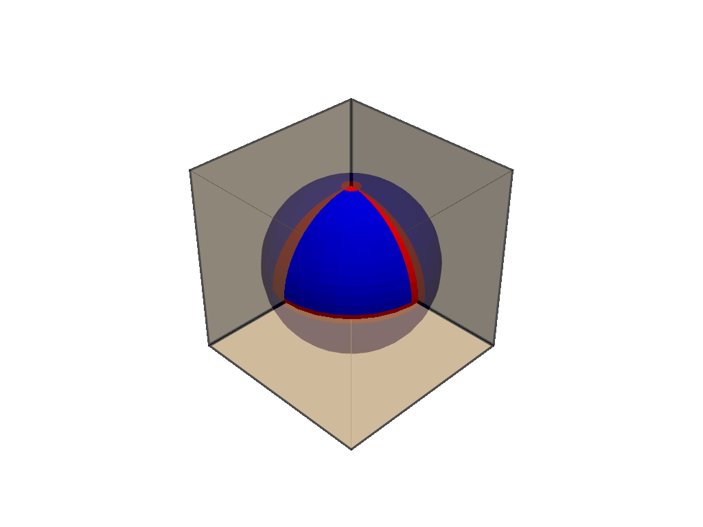
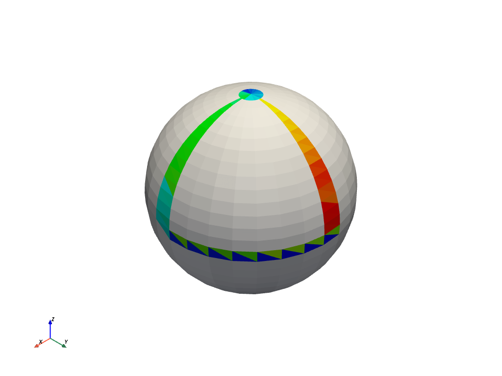

collision#
- PolyDataFilters.collision(other_mesh, contact_mode=0, box_tolerance=0.001, cell_tolerance=0.0, n_cells_per_node=2, generate_scalars=False, progress_bar=False)[ソース]#
2つの多面体サーフェス間の衝突判定を行います．
もし
collision_modeが all contacts に設定されている場合，出力は接触そいている線になります．もしcollision_modeがファーストコンタクトやハーフコンタクトに設定されている場合は，コンタクトの出力は頂点になります．警告
現在は三角形のみが処理されます．ストリップやポリゴンをトライアングルに変換するには
PolyDataFilters.triangulate()を使用してください． それ以外の場合は，このメソッド内でメッシュの変換が行われます．- パラメータ
- other_mesh
pyvista.DataSet 衝突をテストする他のメッシュ． 他のメッシュがサーフェスでない場合は，その外面が抽出され，三角測量されます．
- contact_mode
int,optional 接触モード． 以下のいずれかになります．
0 - すべての接触．2点/コリジョンで全ての接触セルペアを見つけます
1 - ファーストコンタクト．ファーストコンタクトポイントを素早く見つけます．
2 - ハーフコンタクト．接触しているすべてのセルペアを，1コリジョンにつき1ポイントで見つける．
- box_tolerance
float,optional 全体座標でのOBB（Oriented Bounding Box）ツリーの許容範囲．
- cell_tolerance
float,optional セルの許容量（二乗値）．
- n_cells_per_node
int,optional 各OBBのセルの数．
- generate_scalarsbool,
optional コンタクトセルを視覚化するフラグ． もし
Trueならば，接触しているセルは赤から青へと色づけされ，最初に決定された衝突は赤になります． この配列は"collision_rgba"として格納される．注釈
これにより，メッシュ内の他のセルアレイが削除されます．
- progress_barbool,
optional 進行状況を示す進行状況バーを表示します．
- other_mesh
- 戻り値
pyvista.PolyData"ContactCells"という名前のfield_data属性のコリジョンを含むメッシュです． この配列は，コリジョンがある場合にのみ存在します．int衝突の数．
備考
vtk.vtkCollisionDetectionFilter の性質上，このメソッドを繰り返し使用すると
vtk.vtkCollisionDetectionFilterを直接使用した場合よりも遅くなります． このフィルタの最初の更新では， vtkOBBTree のインスタンスが2つ作成されます．その後，入力メッシュの変換や行列を変更することで，このインスタンスを更新することができます．このメソッドは変換を前提としていないので，単一の衝突テストには使いやすいですが，繰り返される衝突を高速に計算するには
pyvistaとvtkの組み合わせを使うことをお勧めします． 詳しくは， Collision Detection Example をご覧ください．例
球体と立方体の背面の衝突を計算し，最初の10個の衝突のセルインデックスを出力します．
>>> import numpy as np >>> import pyvista >>> mesh_a = pyvista.Sphere(radius=0.5) >>> mesh_b = pyvista.Cube((0.5, 0.5, 0.5)).extract_cells([0, 2, 4]) >>> collision, ncol = mesh_a.collision(mesh_b, cell_tolerance=1) >>> collision['ContactCells'][:10] array([471, 471, 468, 468, 469, 469, 466, 466, 467, 467])
"ContactCells"のフィールドデータを使ってコリジョンマスクを作成し，コリジョンをプロットします． 衝突のあったセルは赤で表示されます．>>> scalars = np.zeros(collision.n_cells, dtype=bool) >>> scalars[collision.field_data['ContactCells']] = True >>> pl = pyvista.Plotter() >>> _ = pl.add_mesh(collision, scalars=scalars, show_scalar_bar=False, ... cmap='bwr') >>> _ = pl.add_mesh(mesh_b, color='tan', line_width=5, opacity=0.7, ... show_edges=True) >>> pl.show()
 あるいは，
generate_scalarsを有効にした後，デフォルトの'collision_rgba'配列を使って衝突をプロットするだけでも構いません．>>> collision, ncol = mesh_a.collision(mesh_b, cell_tolerance=1, ... generate_scalars=True) >>> collision.plot()
 このフィルターを使ったその他の例については， 衝突 を参照してください．